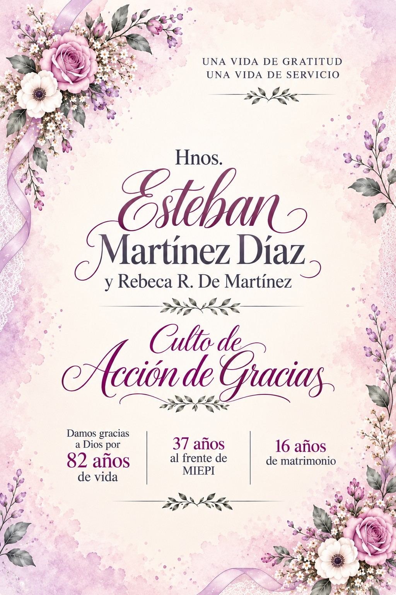

Abrir invitación
Con profunda gratitud a Dios,
tenemos la alegría de invitarle a
usted, a su apreciable familia y a la
Zona que dignamente representa, a
compartir una celebración especial.
Celebramos las bondades y fidelidad del Señor a lo largo de estos años.